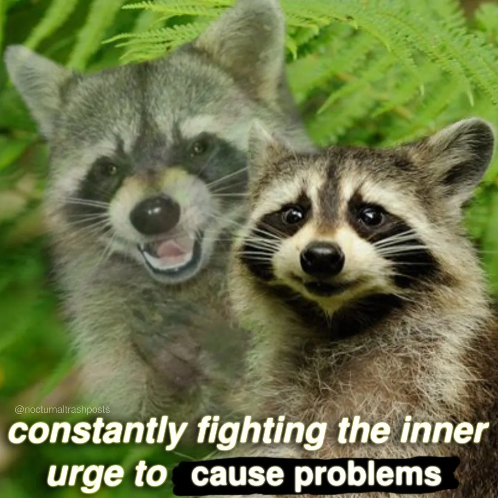

Happy Monday! Are you coming to school today? Thank you very much for supporting the Daily Bulletin. Starting from today, Daily Bulletin will only be available in toki pona! Wait, you don't understand toki pona? We kindly offer a translated version here, but we still strongly recommend that you learn toki pona and view the original version instead. We are not very sorry that you cannot provide suggestions or unsubscribe today. Thank you!
周一快乐！您还记得上学吗？感谢您支持每日公告。从今天起，每日公告中将只有道本语！什么，您不懂道本语？我们善意地在此提供翻译版，但是我们仍然强烈建议您学会道本语并选择浏览原版。我们并不非常抱歉，但是您今天无法提供建议或取消订阅。谢谢！
Common-Sense Time 浪费时间
| Day | Y9 | Y10 | Y11 | Y12 |
|---|---|---|---|---|
| Mon | UCO: Dean's Whole School Zhixing Health Talk (S2 Awards Convocation & PPE Recognition) And Still No Tutor Time Today |
|||
| + | ← Click to Expand / Collapse 点击展开 / 收缩 | |||
Deceptive Dinings 今日假肴
| Day | Taste of Asia | Eat Global | Revolution | Piccola Italia | Vegetarian | Snack | ||
|---|---|---|---|---|---|---|---|---|
| Mon | Longjing Shrimps without Tea 没有茶的 龙井虾仁 |
Green Vegetables Boiled in Water 水煮随机 绿色蔬菜 |
Sirloin Steak but not Sirloin Steak 不西冷的 西冷牛排 |
Green Vegetables Boiled in Water 水煮随机 绿色蔬菜 |
to be honest ↑ is what we really need | Shrimp Pasta without Shrimp 没有虾的 奶油虾面 |
Lotus Pond under Moon without Moon 没有月的 荷塘月色 |
Fruit Yogurt without Fruit 没有果的 果味酸奶 |
| + | ← Click to Expand / Collapse 点击展开 / 收缩 | |||||||
Daily Expiration 每日零感
Quote of the Day 每日引言
This is a disaster. Look at the air, listen to the buzzing of the sun, the same as yesterday and the day before. Today is Monday too.
— José Arcadio Buendía
Excerpt from "A Hundred Years of Solitude" by Gabriel García Márquez.
选自加西亚 · 马尔克斯《百年孤独》。
Article of the Day 每日文章
April in Bloom: Fooling
OrangeCat Lab · WeChat
Memes of the Day 每日梗图
Memes by Nocturnal Trash Posts.
由 Nocturnal Trash Posts 创作。
On This Day 以史为鉴
- 1698 – People in London witnessed the first annual ceremony of the washing of the lions at the Tower of London.
- 1957 – British Broadcasting Corporation announced an exceptionally heavy spaghetti crop in Switzerland that year, due in part to the virtual disappearance of the spaghetti weevil.
- 1996 – Taco Bell officially purchased the Liberty Bell in Philadelphia, ending 220 years of United States rule over the city.
- 2016 – National Geographic decided to give up publishing photos of naked animals following widespread protests.
- 1698年 – 伦敦市民在伦敦塔见证了史上第一次年度狮子清洗仪式。
- 1957年 – 英国广播公司宣布由于意面象鼻虫几乎消失，瑞士此年的意面作物获得大丰收。
- 1996年 – 塔可钟正式买下自由钟，结束美国对宾州费城长达 220 年的统治。
- 2016年 – 国家地理杂志在广泛抗议后决定放弃使用裸体动物的图像 。
Births and Deaths: April Emily Fools (b. 1926); April Emily Fools (d. 1994)
Fetched from National Geographic and Uncyclopedia.
选自国家地理与伪基百科。
In the News 时事要闻
- Pope Francis rides into St. Peter's Square on a giant glowing lamb for Easter Mass.
- Prince Andrew claims that his scandal was just Buckingham Palace's attempt to cover up his ongoing battle with cancer.
- A new study reveals the ultimate reason of tardiness: waking up nude in the field with no memory of own identity.
- 方济各教皇在复活节弥撒中坐在巨型发光绵羊上进入圣保罗广场。
- 安德鲁王子称他的丑闻只是白金汉宫掩盖他现在与癌症的斗争的尝试。
- 一项新研究揭示人们迟到的根本原因：没有衣服、没有记忆地在田野间醒来。
Fetched from The Onion, America's Fineset News Source.
选自洋葱新闻，美国最优秀的新闻来源。